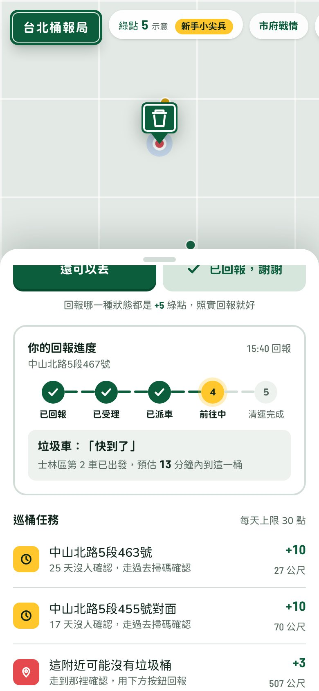
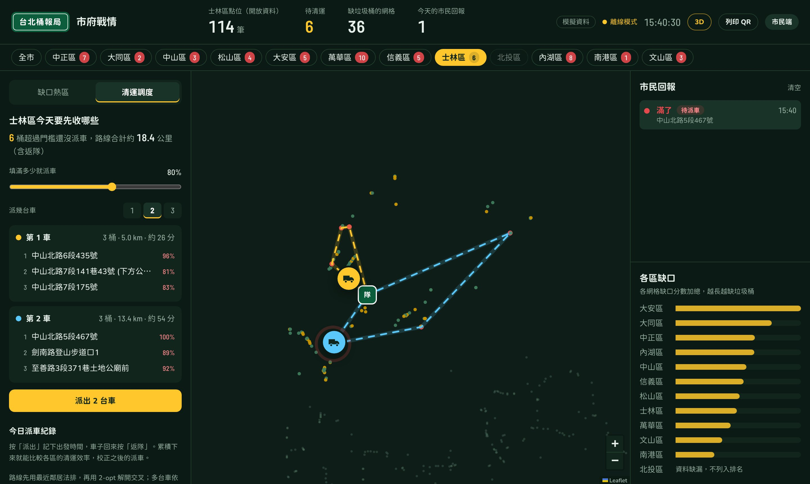
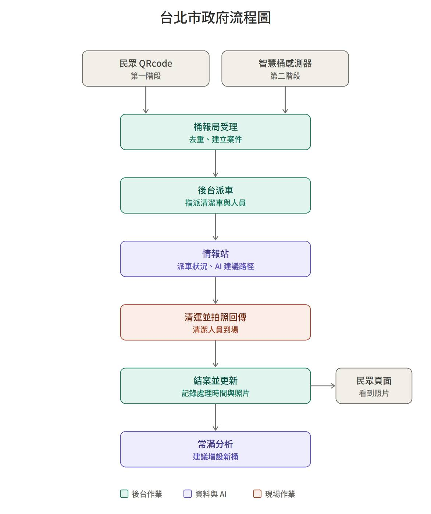

市政 Debug 松・題目 #2 找回消失的垃圾桶
台北桶報局：掃一下，城市就知道。
2018 年 7 月
2,004 處
2026 年 6 月
806 組
約剩四成・同流 One Flow
問題
垃圾桶
「我滿了。」
路人
「要找誰？」
市府
「哪裡滿了？」
垃圾桶增減要經現場會勘、要里長同意，最需要垃圾桶的行人，會勘時沒有人代表。
市民端
1 已回報
桶：「我滿了！」
2 已受理
桶報局：「收到！」
3 已派車
垃圾車：「出發啦」
4 前往中
垃圾車：「快到了」
5 清運完成
「花了 N 分鐘」
免註冊、免下載 App。進度接戰情室真實的派車紀錄；貼紙被換掉，頁面會直接警告。

市府戰情室
分區派車
12 區各一個標籤，只收超過門檻的桶，1 到 3 台車自動分工排路線。
返隊紀錄
出發、返隊時間，實際對預估，每區清運效率看得見。
缺口熱區
人多桶少、常滿又沒鄰居的桶，列成候選新設點，帶進會勘。

垃圾桶位置是真實開放資料（661 個點位）；填滿率、人流為模擬，正式版接感測器與捷運資料。
環保小尖兵
1–2 次回報
新手小尖兵
拿到第一枚徽章
3–9 次回報
巡守員
進入區級月榜
10 次以上
區域守護者
年度表揚候選
回報什麼狀態都拿一樣的點數，沒有說謊的誘因；要掃到現場的 QR Code、每天有上限。
落地
第一階段・上任 100 天
從人流最多的台北車站、西門試辦 QR 貼紙；和 1999、台北通的回報整合成同一個入口。
第二階段・智慧垃圾桶
加裝超音波感測器，滿了自動通報；QR Code 繼續保留，接住突發狀況。
需要：環保局主責、資訊局支援、試辦區清潔隊配合。
附錄・處理流程
第一階段民眾掃 QR Code，第二階段智慧桶感測器。受理時合併重複回報，派車、AI 建議路線、清運拍照、結案，民眾頁面看到照片，最後用常滿分析建議增設新桶。
流程圖：Kyra
